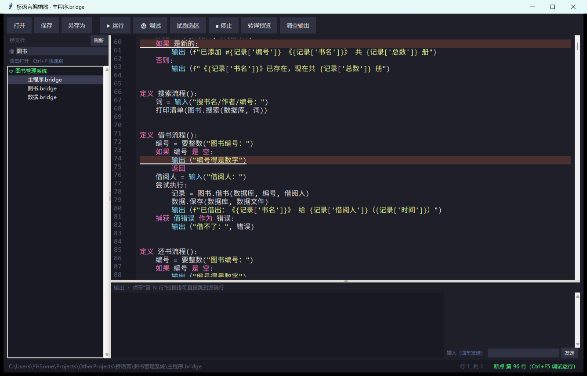

v0.2.0 · Python 的中文源级方言
用中文写 Python，
像母语一样顺手
.bridge 文件先被转译成标准 Python，再交给 CPython 执行。
行号逐行对应、报错说中文、英文写法原样透传、混写合法。
0.41 MB · 解压到项目根就能跑 · 只要求 Python ≥ 3.10
你好.bridge
名字 = 输入("你叫什么？")
如果 名字 是 空:
输出（"总得有个名字吧")
否则:
输出（f"你好，{名字}！")
导入 数学
输出（"圆的面积：", 数学.圆周率 * 2 ** 2)它不只是"换皮"
中文关键字
如果 / 否则 / 对于 / 返回 / 捕获，同一个 Python 关键字有多个中文写法，字符串和注释不翻译。
独有语法
标记 / 跳转到 做 goto；运行 / 并行 / 等待完成 让 .bridge 互相调用；读取 直接拿文件/JSON/CSV/数据库对象。
对象化标准库
文档、JSON、表格、SQLite 数据库、HTTP 响应全是"能点字段"的对象；配置.端口 = 9090 然后 保存()。
断点调试
编辑器 F9 打点、Ctrl+F5 调试；命令行 桥.py 调试 x.bridge --断点 3:条件，支持步入/步过/看变量。
便携包
0.41 MB 一个 zip，解压到项目根就完事：不 pip、不配 PATH、不写注册表，删目录即卸载。
为 AI 而生
包里自带 AI速查.txt / AI参考.md / AGENTS.md；桥.py AI 一条命令打印提示词。
三分钟上手
-
解压
把
桥/目录放到你的项目根，和你的代码平级。你的项目/ ├── 桥/ ← 解压出来就这一坨 └── 你好.bridge ← 你的代码 -
写
名字 = 输入("你叫什么？") 输出（f"你好，{名字}！") -
跑
python 桥/桥.py 运行 你好.bridge # 文件名打不出来时： python 桥/bridge.py 运行 你好.bridge
强连接 AI
桥语言是给 AI 写代码设计的：规则是可读文本，AI 拿到就能写、能自查、能反查。
一份速查贴进 prompt
AI速查.txt（约 13 KB）：全部中文↔Python 映射，一行一条。
一条命令拿提示词
python 桥/桥.py AI
python 桥/桥.py AI --完整
python 桥/桥.py AI --json编码助手入口
AGENTS.md 写好了最小规则、常用命令、约定；Cursor/Codex 这类助手会优先读它。
现在有多少东西
108中文关键字/内建
18中文化模块
38句式糖
87自检项
0.41 MB便携包
